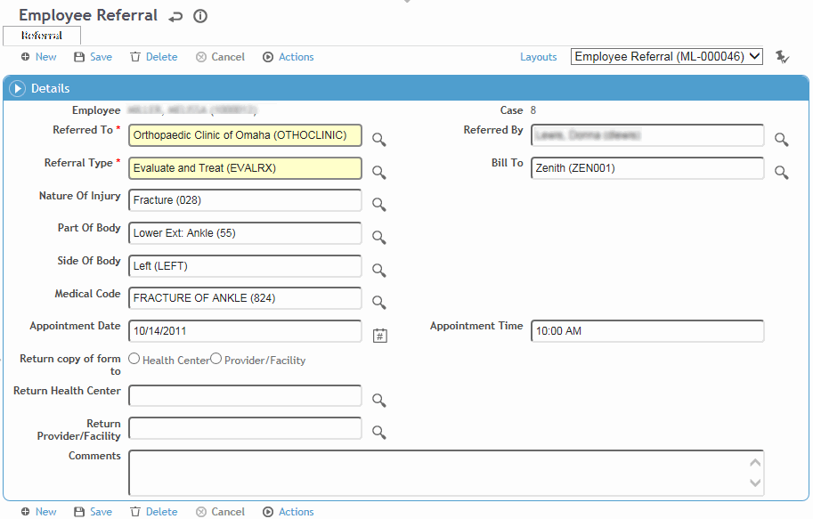

Cority provides functionality for a Management Referral workflow that integrates the Appointments and Case Management modules to make it easy for:
- a manager to refer an employee to a clinic
- the clinician(s) to address and carry out the referral and any clinic visits
- the manager and clinician(s) to communicate throughout the process.
Related fields and actions must be added to custom form layouts. For more information, see Using the Management Referral Workflow. Please contact your system administrator for further information.
Track referrals related to this clinic visit on the Referral tab in the Clinic Visits record. You can view all referrals related to this employee or just referrals related to this visit.
Click a link to edit an existing referral, or click New.

Select the hospital/practitioner the employee has been Referred To, and the Referral Type.
The Referred By defaults to the practitioner for the selected clinic visit, but you can change this.
Select the insurance company that the referral should be Billed To.
The Nature Of Injury, Part and Side Of Body, and Medical Code default to those indicated for the selected clinic visit, but you can change these.
If the appointment has already been made, enter the Date and Time. This can be added later if required.
Indicate where the form should be returned; if you selected Health Center, select the appropriate Return Health Center from the look-up table; if you selected Provider/Facility, select the appropriate Return Provider Facility from the look-up table.
Click Save.
To view and print the referral form, choose Actions»Print (to print multiple referrals, select them from the referral list and choose the action on the list screen).
To send it directly, choose Actions»Email. The email addresses defined for the employee and for the Referred To hospital/practitioner are listed in the To field, but you can change these. Enter an email address in the CC field if required and click Send. The referral form is sent as a PDF attachment.
The referral form may include an authorization statement and/or a statement that appears in the footer. These are defined in the system settings, and apply to all referrals created on this system. For more information, see Changing Your System Settings.